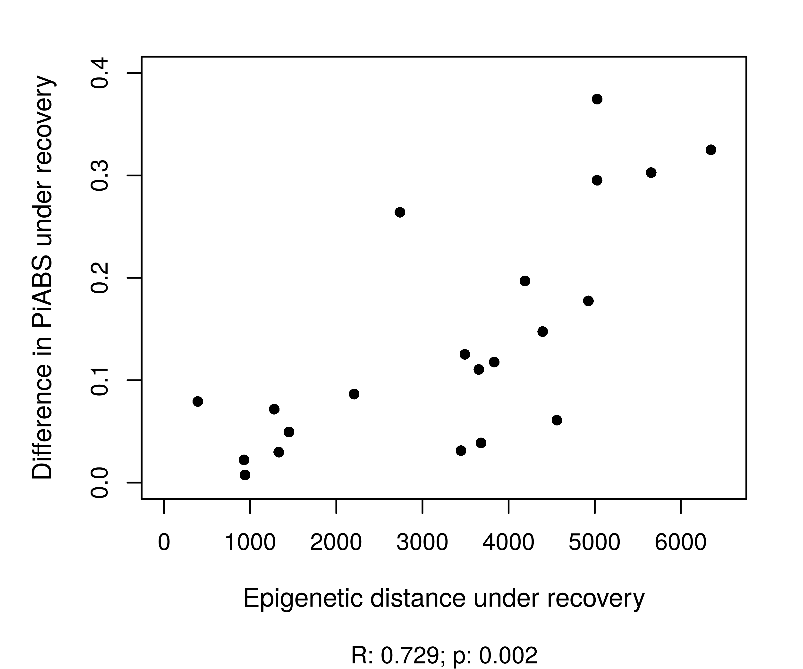

Functional role of
epigenetic variation
in seagrass
under heat stress
GRC Marine Molecular Ecology
Hong Kong
Alexander Jueterbock
Researcher at Nord University
Norway
Asexual reproduction in flowering plants
Asexual reproduction in seagrass

Epigenetic variation
Compensation for absence of genetic variation
Methylation variation increased productivity and resistanceArabidopsis thaliana
What is the methylome?

DNA methylation represses gene expression

DNA methylation heritability
- Epimutation rate ca. 64,000 x genetic mutation rate
- Response to environment
Resetting versus memory in DNA methylation

Objectives
- Do seagrass clones vary in DNA methylation?
- Can the methylome predict heat stress resistance?
Sampling in the Baltic Sea
>1,000 years old clonal meadows reported
Sampling location
40 plants collected along a 250 m transect
39 plants were clones (equal genotype at 7 microsatellite loci)

Methylome characterization
Basic results
How much of the genome is represented? How many TEs, intergenic, and genic regions?Differential methylation

Differences not explained by shoot distance
R=0.01, p=0.71

Objectives
- Do seagrass clones vary in DNA methylation?
- Can the methylome predict heat stress resistance?
Heat wave simulation
10 clones

Physiological stress response
Physiological stress response
Performance under control and recovery was positively correlated.

Methylation patterns changed permanently

Strong epigenetic stress memory
Pre-stress methylation patterns in genes (CG)
correlated with performance
prior to stress
after stress

Pre-stress correlations

Post-stress methylation patterns
correlated with post-stress performance
in TEs (CHG)

in intergenic regions (CHG)
